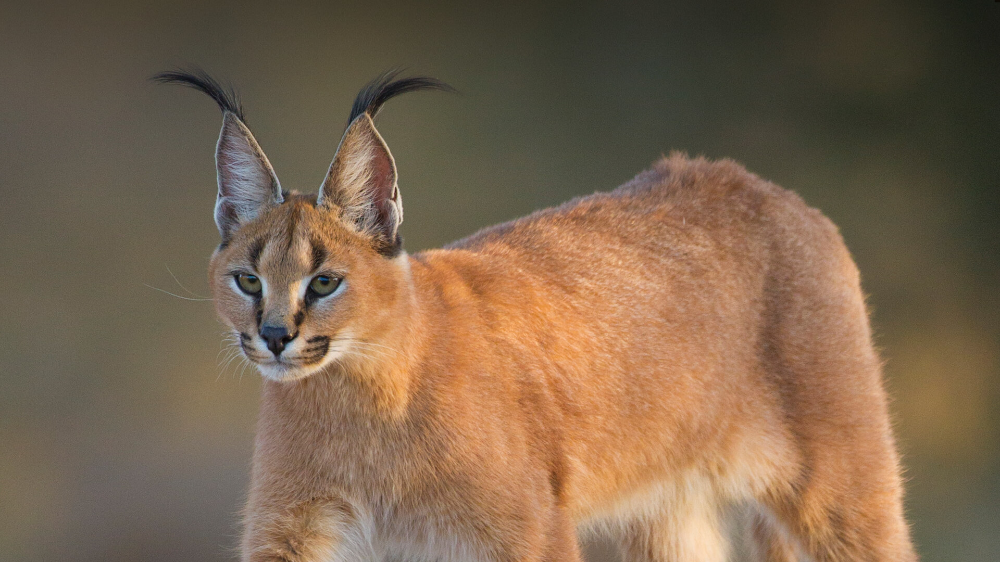

1-The Caracal is a medium sized wild cat,It has long legs,long ears and a shortface.It has a bushy tail to.They are mostly endangered because of habitat discharging and deforestation
 Mouse deer2-The Mouse deer is also called Chevrotain and it is a small version of an regular deer.They only eat plants and it is endangered because of deforestation
 Four horned antelope
Four horned antelope
It is also a deer and it is also called chousingha.It is called antelope because of there horns,they don't only have 2 horns they have 4.Thats why it is called four horned antelope.They are endangered because of habitat discharging